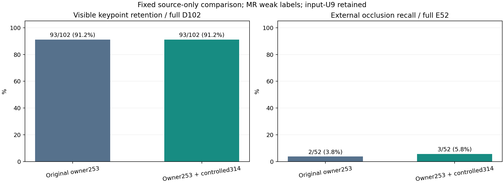

기존 데이터 C43과 대조 추가 C44를 각각 seed1550·8,000 update로 학습했다. 두 모델을 모두 동결한 뒤 공개 SOURCE 성능을 비교했다. 새 모델 채택 및 전체 문제 해결은 미완료다.
공개 MR 검증의 외부 가림 정검출 변화: +1/52. 보이는 점 정검출 변화: +0/102. 입력 보류 9개를 보임 recall 분모에 포함했다. 이 수치는 공개 데이터의 기존 약라벨 기준이며 자체 평가 223장의 새 성능이 아니다.

혼동행렬은 행 D(보임)·E(외부 가림), 열 D·E·U(입력 보류) 순서다. 전체 MR 검증 360행 중 D/E 정답 154개, 그 밖의 상태 206개를 따로 보존했다.
| 모델 | 혼동행렬 | 보임 recall | 가림 precision | 가림 recall | 보류율 / 알려진 D/E |
|---|---|---|---|---|---|
| C43 | [[93, 0, 9], [50, 2, 0]] | 91.2% | 100.0% | 3.8% | 9/154 (5.8%) |
| C44 | [[93, 0, 9], [49, 3, 0]] | 91.2% | 100.0% | 5.8% | 9/154 (5.8%) |
입력이 유효한 145개(D93/E52)만의 조건부 진단은 아래와 같다. 위 전체 154개 결과와 분리하며, 입력 보류 9개를 지워 전체 성능으로 제시하지 않는다.
| 모델 | 입력 유효 조건부 혼동행렬 | 보임 recall | 가림 precision | 가림 recall | D/E 입력 U |
|---|---|---|---|---|---|
| C43 | [[93, 0, 0], [50, 2, 0]] | 100.0% | 100.0% | 3.8% | 0 |
| C44 | [[93, 0, 0], [49, 3, 0]] | 100.0% | 100.0% | 5.8% | 0 |
원래 합성·공개 실사 28,976행과 주 손실·분할·보류·draw·optimizer·clip을 유지했다. C43은 기존 중심 표면 보조 253개, C44는 직접 덮기 157개와 옆 배치 157개를 추가한 567개를 썼다. 원본 BEFORE는 중복 학습하지 않았다. 같은 클래스별 평균 CE를 쓰므로 데이터 확장에 따라 클래스 안의 개별 행 가중치는 달라진다.
새 대조 데이터는 같은 q/L에서 바뀐 fullRGB의 문맥·local96·중앙32 입력을 함께 만든다. 원본 46×8 특징 byte parity와 전체 3,816행의 전처리를 검증했다. 모든 신규 native 가림·좌표품질은 UNKNOWN으로 유지하고 별도 중심 표면 보조에만 썼다. 실패 대조 2쌍도 남겼으며 보조 손실에서는 제외했다.
| 모델 | 학습에 사용한 owner 수 | 원래 owner253 적합 | CF314 분류 응답 | native35 통과 수 | 기존 전체 SOURCE 기준 통과 |
|---|---|---|---|---|---|
| C43 | 253 | 253/253 | 250/314 | 23 | False |
| C44 | 567 | 253/253 | 314/314 | 24 | False |
C43은 CF314를 학습에 쓰지 않았고, C44는 owner 보조 학습에 사용했다. 이 대조 입력은 모두 TRAIN 원본에서 생성됐으므로 CF 점수는 새로운 장면의 주 가림 성공을 뜻하지 않는다. 독립 entity·quality 손실은 같고 entity의 기존 한계가 남아 있다. 실제 실사 좌표품질 gold는 없다.
| 데이터 | 모델 | D | E | 보임 recall | 가림 precision | 가림 recall | D/E 입력 U | binary 밖의 정답 |
|---|---|---|---|---|---|---|---|---|
| OLD6144 | C43 | 828 | 60 | 97.9% | 77.8% | 81.7% | 4 | 1160 |
| OLD6144 | C44 | 828 | 60 | 97.9% | 77.8% | 81.7% | 4 | 1160 |
| NEW20480 | C43 | 1772 | 130 | 97.7% | 74.2% | 86.2% | 2 | 2194 |
| NEW20480 | C44 | 1772 | 130 | 97.9% | 75.5% | 85.4% | 2 | 2194 |
| PALLOX512 | C43 | 35 | 6 | 94.3% | 100.0% | 100.0% | 2 | 215 |
| PALLOX512 | C44 | 35 | 6 | 94.3% | 100.0% | 100.0% | 2 | 215 |
| MR1840 | C43 | 102 | 52 | 91.2% | 100.0% | 3.8% | 9 | 206 |
| MR1840 | C44 | 102 | 52 | 91.2% | 100.0% | 5.8% | 9 | 206 |
WOOD/SQUARE·재질·형상·native8 교차 집계는 전체 고정 표에 포함한다. 추가 실사 anchor에는 native2/3이 없고, 53query/46frame를 재사용했으므로 477variant를 독립 사진으로 세지 않는다.
| native | D | E | C43 가림 정검출/E | C44 가림 정검출/E | D/E 입력 U |
|---|---|---|---|---|---|
| 0 | 27 | 0 | 0/0 | 0/0 | 2 |
| 1 | 23 | 0 | 0/0 | 0/0 | 5 |
| 2 | 14 | 0 | 0/0 | 0/0 | 1 |
| 3 | 15 | 0 | 0/0 | 0/0 | 1 |
| 4 | 12 | 25 | 2/25 | 3/25 | 0 |
| 5 | 5 | 27 | 0/27 | 0/27 | 0 |
| 6 | 3 | 0 | 0/0 | 0/0 | 0 |
| 7 | 3 | 0 | 0/0 | 0/0 | 0 |
고정 공개 SOURCE12·대조 CF12 및 사후 변경 사례 전수 1개
자체 평가223·금지 데이터·PnP·좌표보정 접근은 이번 단계에서 0회다. 원래 전체 목표는 미해결이며 모델을 선택하거나 문턱을 바꾸지 않았다.